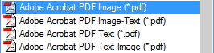
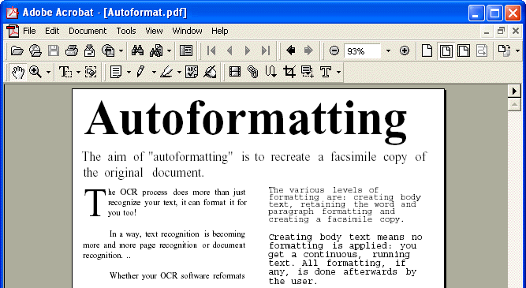
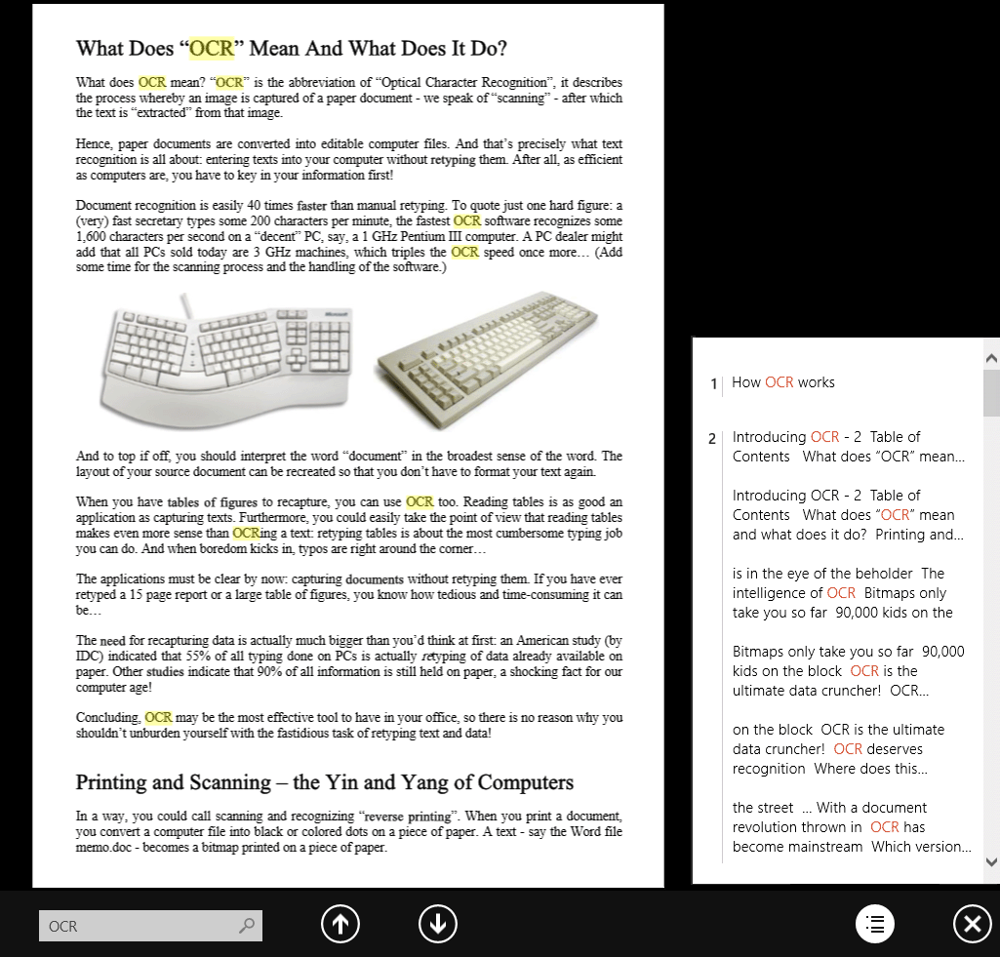
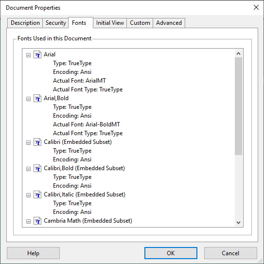
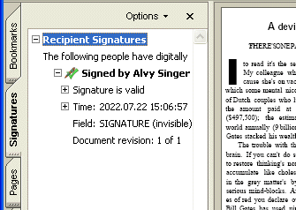
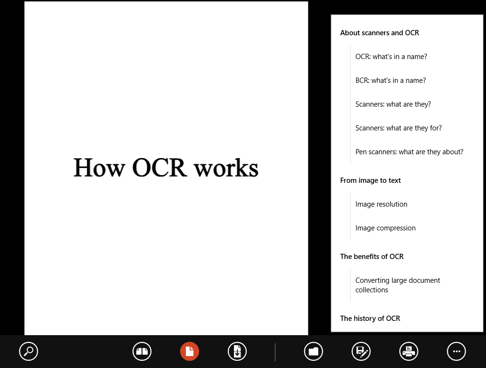
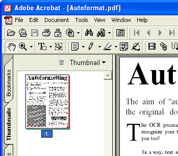
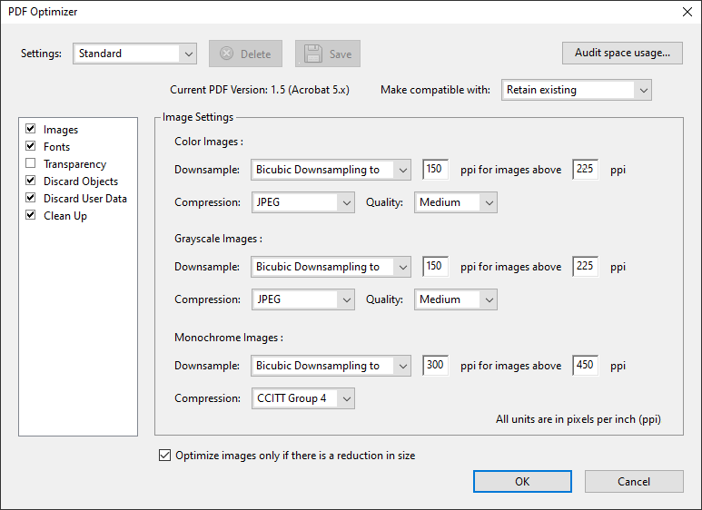
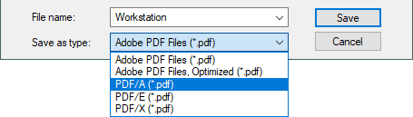
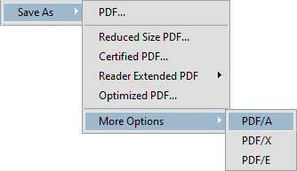

Tweet
Tweet
Actually, the advanced OCR solutions support various types of PDF files: “PDF Text”, “PDF Image-Text” and “PDF Text-Image”. (The “PDF Image” format is usually supported too, but it’s just an image format. No text recognition is executed to generate it, so you don’t get a “searchable”, text-based document.) (This also holds for Microsoft’s XPS format!) What are the differences?

The format PDF Text creates a searchable PDF file that contains the text (and possibly graphic zones for photographs, artwork etc.). The page image is not contained in the single-layered PDF file.

The format PDF Image-Text on the other hand creates a searchable PDF file that contains the page image and the recognized text. The page image is contained in the two-layered PDF file above the autoformatted text. (Execute a text search and you’ll see that the text is definitely contained in the PDF file…)

You get the same functionality with the format PDF Text-Image, but this time the text is placed above the image, not under it.
“State-of-the-art” OCR software supports font embedding for its PDF output. Embedding fonts prevents font substitution when readers view and print the recognized document. It ensures that readers — whatever their computer configuration and the installed fonts may be — see the text in its original typefaces.

You can for instance generate a PDF file with your OCR software (under Windows) and send it to a colleague of yours that displays and prints the file on his Unix computer. Whatever typefaces occur in the PDF file, you are sure to display the recognized document in the exact same way. Or you generate a Chinese or Japanese document with your OCR software and open it on a PC that has, say, an English version of Adobe Reader (without the Asian font packs installed). None of this matters: the PDF file again uses the internally embedded fonts to display the document…
In other words: font embedding is what makes your PDF files truly portable — on any computer platform and under all circumstances! There’s a minor drawback: embedding the fonts increases the file size of the recognized documents (somewhat)!
Up-to-date OCR software also generates digitally signed PDF output. Digital signatures identify the person (or agency) that created the PDF documents; they authenticate the identity of the author, certify a document and help prevent unwanted changes to PDF documents. (OCR software adds a first signature or “author signature” to the PDF output. Signatures added later on by other people to indicate approval of a document are called “ordinary signatures”.)

It is up to the user to create a “self-signed” digital ID on his PC or to obtain a certificate from a “third-party” signature handler!
The author signature applied by your OCR software may be “invisible”: it appears in the “Signatures” tab of Adobe Acrobat and Adobe Reader. To ensure legibility of all scanned information, the OCR software does not place a signature on the pages of the recognized documents!
Some OCR software can even create the bookmarks of the PDF files for you! The OCR software then applies an intelligent algorithm to come up with a title, a “summary” for each text zone. (The graphics and tables are just numbered.) It’s as if a table of contents was created for your document…

Another navigational element of PDF documents, page thumbnails, can be created dynamically by your Adobe Reader (or Adobe Acrobat) software!

Advanced OCR software creates web-optimized PDF files (also called “linearized” PDF documents). You can start reading such documents as soon as their first page is downloaded. The other pages get downloaded in the background, while you’re reading the first one! (If necessary, this process is repeated: go immediately to another page and that page is promptly downloaded from the web server. Once more, the rest of the document becomes available later…)

PDF/A, finally, is a stripped-down subformat of PDF for long-time archiving. (The “A” stands for “archivable”.) The specific guarantee here is that you’ll be able to open these documents with identical results, say, 50 years from now!
 
Going places with the recognized text — More about Adobe Acrobat PDF output — Does OCR software format the text? — Does OCR software recognize tables? — Converting document collections
Home page — Intro — Scanners — Images — History — OCR — Languages — Accuracy — Output — BCR — Pen scanners — Sitemap — Search — Feedback – Contact